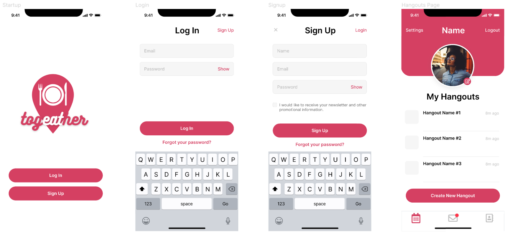

Project: Togeather
Togeather is a currently work in progress project coming to Android and iOS devices. We are solving the ultimate problem that most friends have: where should we eat?
The application is simple -- create a hangout session with friends, get recommended places to eat or drink, and then swipe up or down. Togeather will account for each individual's swipes, and recommend restaurants that everyone in the group is interested in. Once the location is selected, Togeather will automatically create an event where the group can plan the details.
The mobile application is currently being developed with a team of 4, working in React Native, Expo, Yelp Fusion API, and Google Firestore.
The application is slated for release in 2022.